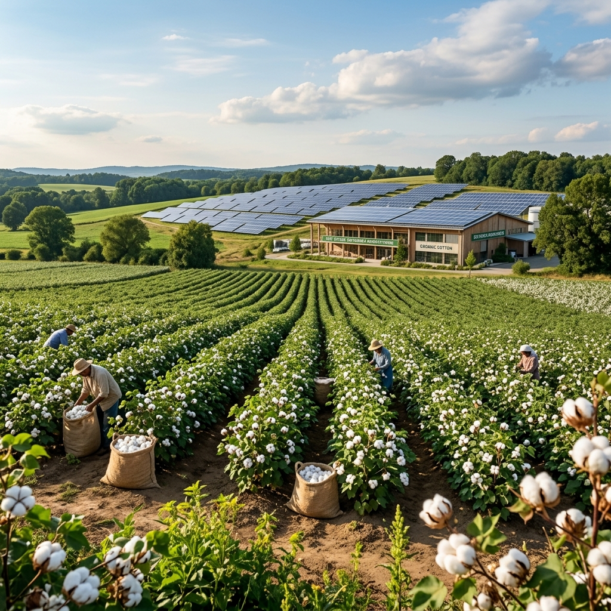

At GKB Textiles, sustainability is integrated into our manufacturing practices through solar energy, efficient technology, and responsible operations.
Committed to reducing our environmental footprint through technology and innovation.
Our 100 kW Solar Power Plant contributes approximately 22% of daily energy requirements, significantly reducing conventional energy consumption and lowering our carbon footprint. With an average daily consumption of 2,200 kWh, solar energy plays a vital role in our manufacturing operations.
Our 14 Picanol OmniPlus 800 Air Jet Looms use compressed air instead of traditional shuttle mechanisms, resulting in lower energy consumption per metre of fabric, reduced noise pollution, and more efficient yarn utilization with minimal waste generation.
We work with natural cotton fibres including compact, combed, and carded yarns. Our focus on cotton-based fabrics supports biodegradable end products. We continuously explore sustainable yarn options and responsible sourcing practices.
Through efficient resource utilization, modern air jet weaving technology, optimized production planning, and responsible operational practices, we continuously work towards sustainable and energy-efficient textile manufacturing.
Our integrated facility design minimizes material handling, reduces waste, and optimizes energy consumption across all production stages.
Join us in our commitment to sustainable manufacturing. Let us develop eco-conscious fabric solutions tailored to your requirements.
Get in Touch